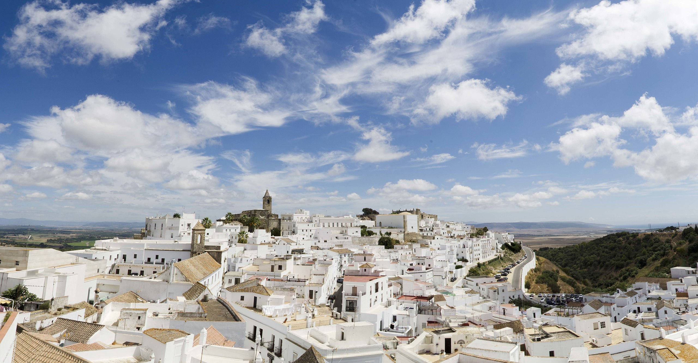

Historia del concurso
by Manuel Jesús de la Calle BrihuegaOrígenes del concurso de hamburguesas más famoso de la comarca de la Janda
El concurso de cocina Cocínate Vejer ha sido una tradición arraigada en la hermosa ciudad de Vejer de la Frontera, en la provincia de Cádiz, España. Desde sus inicios, este evento ha celebrado la creatividad culinaria y la riqueza gastronómica de la región. Su enfoque principal se centra en la elaboración de hamburguesas, pero con un toque especial: utilizar materias primas locales de Vejer de la Frontera. El concurso se celebra todos los años en el mes de Abril y durante una semana congrega a miles de espectadores que acuden a ver los show cookings y a degustar las deliciosas hamburguesas que presentan los candidatos.
- Lomo en manteca
- El famosísimo lomo en manteca de Vejer es un ingrediente estrella en muchas de las hamburguesas del concurso. El lomo de cerdo se cocina lentamente en manteca junto con una mezcla de especias locales, creando un sabor rico y ahumado que añade un toque distintivo a las creaciones culinarias de los concursantes.
- Ternera retinta
- La ternera retinta, una raza autóctona de la región, es apreciada por su carne tierna y sabrosa. Los participantes en Cocínate Vejer aprovechan esta carne de calidad superior para añadir un sabor único y una textura jugosa a sus hamburguesas, honrando así la tradición y la herencia gastronómica de Vejer de la Frontera.
- Huertas de la Janda
- Las verduras frescas son una parte esencial de cualquier hamburguesa sabrosa. En Cocínate Vejer, los participantes tienen acceso a tomates maduros y lechugas crujientes cultivadas en los huertos orgánicos de la región. Estos ingredientes frescos y llenos de sabor elevan cada hamburguesa a nuevas alturas gastronómicas.
El concurso más allá de ser un simple concurso: la innovación gastronómica.
El concurso Cocínate Vejer ha sido un impulsor clave de la innovación gastronómica en la región. Los participantes no solo compiten por crear la mejor hamburguesa, sino que también experimentan con combinaciones de sabores audaces y técnicas culinarias innovadoras. La competición es feroz, pero también es una celebración de la creatividad y el espíritu comunitario.
Vejer de la Frontera, con su rica historia gastronómica y su ubicación privilegiada cerca del mar Mediterráneo, es un caldo de cultivo perfecto para la innovación culinaria. Los chefs locales aprovechan los ingredientes frescos y variados disponibles en la región para crear platos únicos que reflejan la identidad gastronómica de Vejer.
La atmósfera durante el concurso es palpablemente eléctrica. Con el telón de fondo de las pintorescas calles empedradas de Vejer de la Frontera, los concursantes se esfuerzan por impresionar a los jueces con sus creaciones únicas. Los aromas tentadores llenan el aire mientras las hamburguesas se cocinan a la parrilla y se sirven con acompañamientos innovadores que despiertan los sentidos. Los participantes en Cocínate Vejer están constantemente desafiándose a sí mismos y a sus compañeros chefs para elevar el arte de la hamburguesa a nuevas alturas. La competición es un testimonio del talento culinario de la región y una oportunidad para celebrar la diversidad y la excelencia en la cocina.